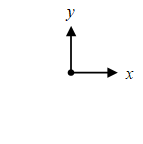
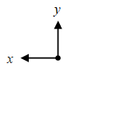
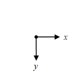
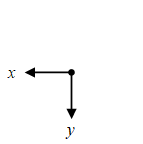

Sistem koordinat kartesian 2-d, dengan $x$ dan $y$ merupakan variabel koordinat [1], dapat digambarkan sebagai berikut ini.
| ID | 0 | 1 |
|---|---|---|
| 0 |  |  |
| 1 |  |  |
Umumnya $x$ berarah mendatar (ke kiri atau ke kanan) dan $y$ berarah vertikal (ke atas atau ke bawah). Baris pertama pada gambar di atas meiliki ID 00 dan 01, sedangkan baris keduanya 10 dan 11.
Pemilihan $x$ ke kiri atau kanan bergantung dari cara pengamat melihat sistem yang ditinjau. Bayangkan seorang melempar sesuatu sehingga benda yang dilempar membentuk gerak parabola. Pengamat di samping kanan pelempar akan memilih sistem koordinat 00, sedangkan pengamat di samping kiri pelempar akan memilih sistem koordinat 01.
Untuk arah $y$ pemilhan ke atas atau ke bawah dapat bergantung dari gerak arah benda atau referensi awal. Saat melempar benda ke atas sebaiknya arah $y$ dipilih ke atas, akan tetapi bila menjatuhkan benda arah $y$ dapat dipilih ke bawah.
dot cross direction • coord sys 3d proj 2d intro • vector 2d intro